Um aviso para quem não pôde estar no culto.
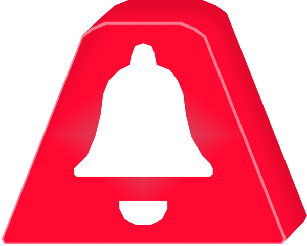
Projeto de Extensão Universitária
UNIFACS — Análise e Desenvolvimento de Sistemas
Programa: Inovação, Ciência e Transformação Digital
ODS 9 — Indústria, Inovação e Infraestrutura
Desenvolvido por Gabriel Conceição da Silva
Não importa onde você esteja, seja presencialmente ou online, chegar a tempo é difícil. Chove, o trânsito para, chega uma encomenda, o micro-ondas apita, ou o aviso que deveria chamar você não funciona. Quando você vê, o culto já começou e a oração do começo ficou para trás.
Como não posso resolver a parte do presencial, posso tentar aliviar a online. O IBN Avisos é um protótipo de aplicação feito para esse momento. Ele avisa quando a transmissão começa e leva a pessoa até ela. E tenta uma coisa mais difícil: fazer quem assiste de casa continuar sendo percebido pela comunidade.
Aqui vão as telas do protótipo, uma por uma.
Antes de desenhar qualquer tela, foram duas entrevistas, um questionário e observação no próprio culto. Três coisas se repetiram: o aviso do YouTube demora, achar a transmissão dá trabalho e assistir de casa parece ver televisão.
E POR QUE NÃO O SININHO DO YOUTUBE?
Porque cada pessoa precisa ativar, ele serve a qualquer canal e se perde no meio de outras notificações.
Um app só para isso é como usar uma calculadora comum em vez da do celular: ela só faz conta, e você não se distrai.
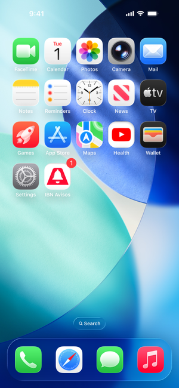
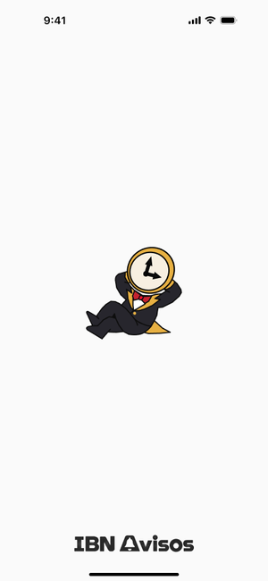
“O culto já começou?”, “Dessa vez, chegue a tempo” e “O próximo culto começa aqui”. Uma ideia em cada tela, antes de pedir qualquer coisa.
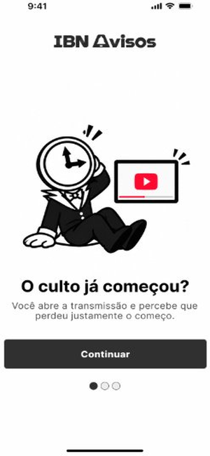
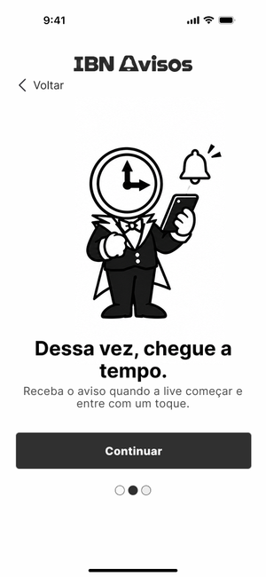
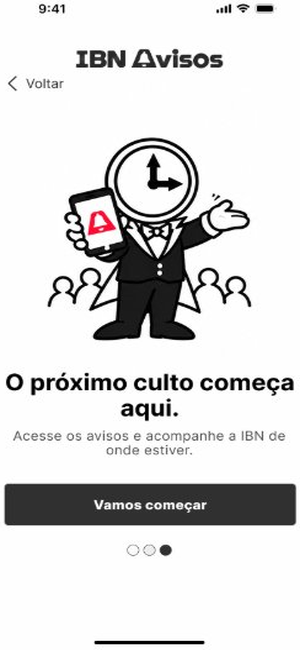
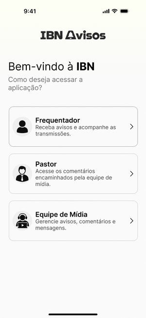
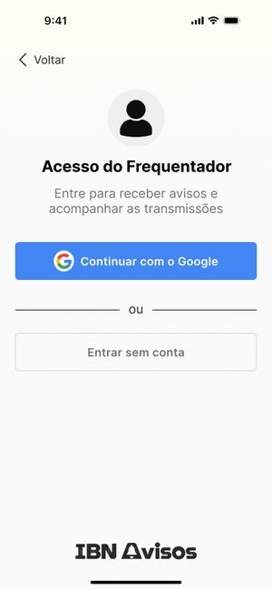
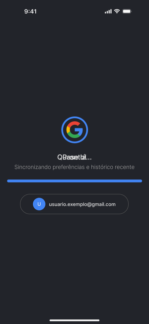
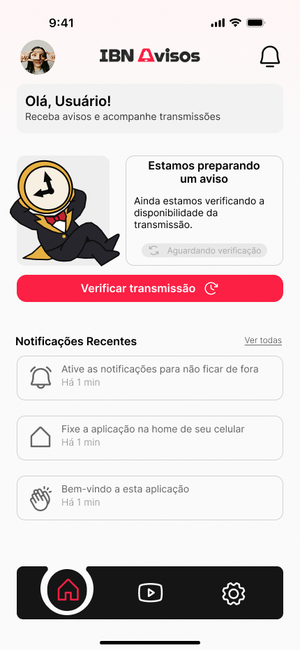
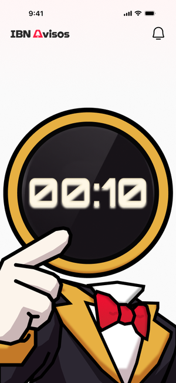
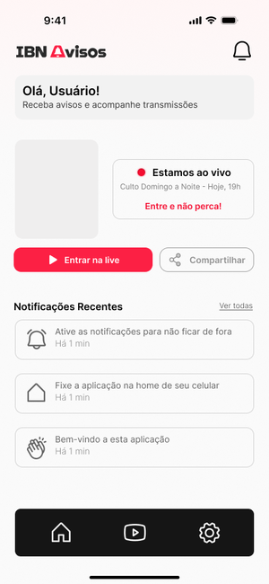
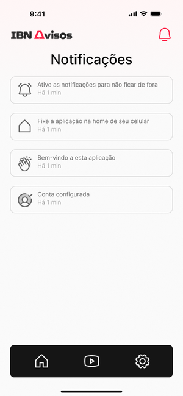
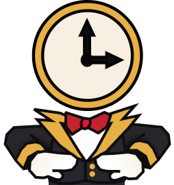
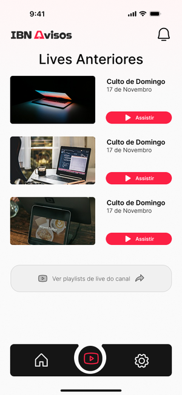
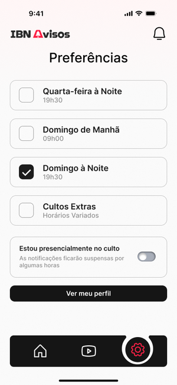
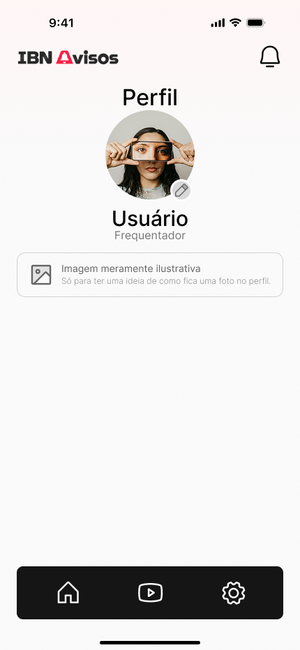
Os dois entram com usuário e senha. No protótipo, essas áreas ainda são um aviso de “em breve”, e a da mídia foi pensada para computador. Quem esquece a senha vê um aviso para falar com o desenvolvedor.
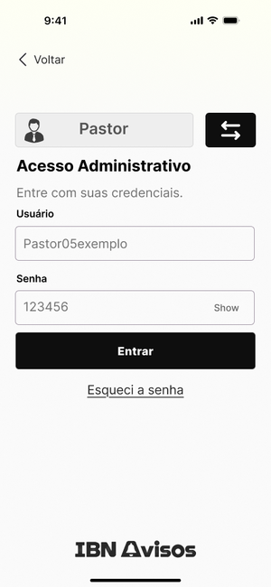
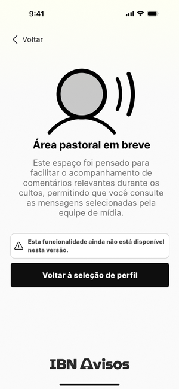
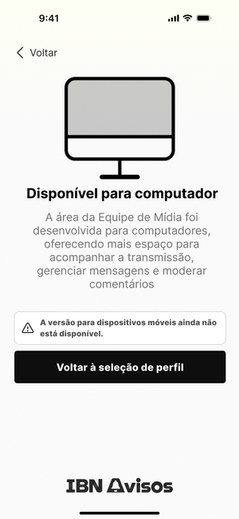
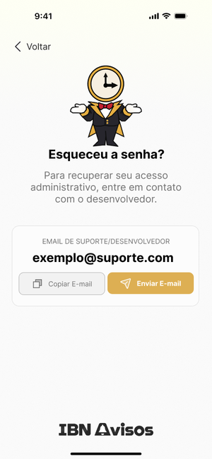
Aqui eu só aponto para onde o app pode ir:
Tudo isso guardando o mínimo possível de dados, porque convicção religiosa é dado sensível pela lei.
Há uma pergunta que o projeto ainda não respondeu: isso deveria continuar depois da extensão, ou é um projeto que cumpriu seu papel e fica por aqui?
Qualquer resposta vale.
RESPOSTA ANÔNIMA · MENOS DE UM MINUTO
Não abriu? Responda em outra aba.